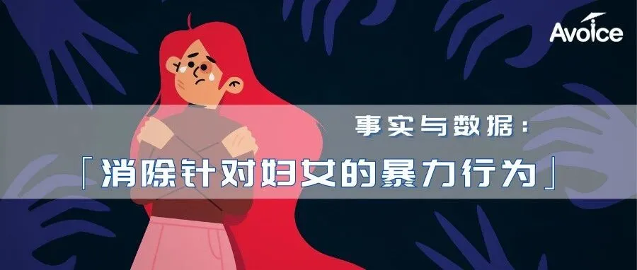
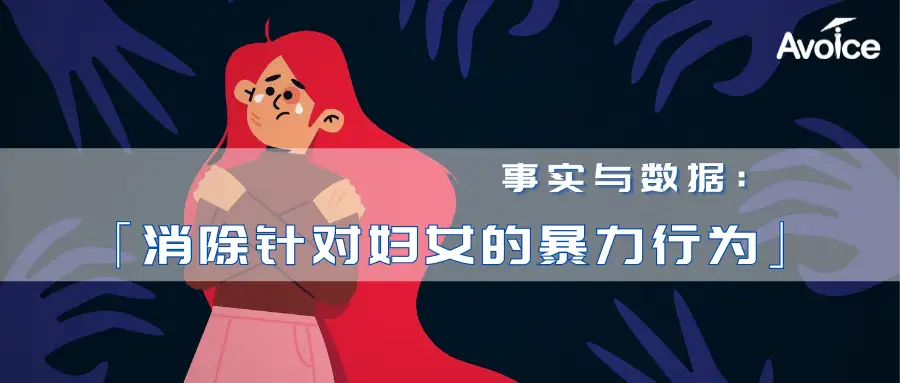

近年来，越来越多有关暴力侵害妇女和女童的新闻出现。目前有至少161个国家提供了相关数据，记录了亲密伴侣间暴力行为的发生率。如果您想要了解具体数据内容，请访问联合国妇女署我们的研究和数据页面
（https://www.unwomen.org/en/what-we-do/ending-violence-against-women/research-and-data），进一步了解数据对于联合国妇女署预防和应对暴力侵害妇女和女童工作发挥的关键作用。
网络助长的暴力侵害妇女和女童的行为
由于目前尚未提出共同的、明确的定义，网络助长的暴力侵害行为在全球范围内缺乏可比数据。但是，在国家和地区层面收集到的现有证据能够证明这一现象的高发率。
在欧盟国家，每10名女性中可能就有1人 在15岁时便遭受过网络骚扰，包括收到令人不快的露骨性电子邮件、短信，或是在社交网站上遭到不适合、令人不快的挑逗。
一项有关阿拉伯国家的地区研究发现，在过去一年中，该地区约60%的女性互联网用户曾遭受过网络暴力。
2021年，在乌干达，约有一半的妇女（49%）称自己在人生的某个阶段受到网络骚扰。
根据韩国国家人权委员会2016年的一项调查，约85%的女性在上网时收到过仇恨言论。
气候变化与暴力侵害妇女和女童的行为
气候变化和环境退化恶化增加了暴力侵害妇女和女童的行为的发生风险，由气候变化导致人民流离失所、资源匮乏、粮食无保障以及为幸存者提供的服务中断等问题是这类行为出现的导火索。
2005年"卡特里娜"飓风过后，在美国密西西比州，流浪到拖车公园的妇女被强奸的案件是当年基线的53.6倍。
在埃塞俄比亚，越来越多的女孩被卖去早婚，以换取牲畜 来帮助家庭应对长期干旱的影响。
尼泊尔人口贩运的受害者数量从1990年的每年约3000-5000人增加到2015年地震后的每年约12000-20000人。
杀害女性的行为
2022年，全世界约有48800名妇女和女童被亲密伴侣或其Ta家庭成员杀害。这意味着平均每小时就有超过五名妇女或女童被自己的家人杀害。
在所有针对女性的凶杀案中，55%是由亲密伴侣或其Ta家庭成员实施的，而在所有针对男性 的凶杀案中，只有12%是家庭成员实施的。
暴力侵害妇女和女童的行为普遍存在
据统计，在全球范围内，约有7.36亿妇女——几乎每三名妇女中就有一人——在其一生中至少遭受过一次亲密伴侣的身体暴力或性暴力、非伴侣的性暴力或两者兼有（占15岁及以上妇女的30%）。这一数字并不包括性骚扰。与没有遭受过暴力的妇女相比，遭受过暴力的妇女患抑郁症、焦虑症、意外怀孕、性传播感染和艾滋病的比例更高。除此之外，她们还面临着还有许多在暴力结束后仍然存在的其它健康问题，这些问题可能在暴力结束后仍然存在。
大多数暴力侵害妇女行为都是由现任或丈夫、前任丈夫或亲密伴侣实施的。超过6.4亿（26%）的15岁及以上妇女曾遭受亲密伴侣的暴力侵害。
在有过恋爱关系的15-19岁少女中，几乎每四人中就有一人（24%）遭受过亲密伴侣或丈夫的身体暴力或性暴力。约16%的15-24岁年轻女性在过去一年中曾遭受暴力。
新冠疫情对暴力侵害妇女和女童行为的影响
新冠疫情进一步加剧了针对妇女和女童的暴力行为（VAWG）发生，同时也暴露并深化了深层次的结构性不平等，遏制了数十年来妇女在参与劳动力市场方面取得的进展。生活在极端贫困中的妇女人数增加，女性无偿照料和家务劳动的负担加重，所有这些都增加了暴力行为发生的风险因素和驱动因素。
自2021年疫情开始以来，45%的妇女称，她们或她们认识的妇女遭受过某种形式的暴力侵害。70%的妇女表示，她们认为来自伴侣的言语或身体虐待变得更加普遍。每10名妇女中就有6人认为公共场所的性骚扰现象变得更加严重。
与暴力行为相关的求助状况
遭受暴力侵害后，只有不到40%的妇女会寻求帮助。据一些国家提供的相关数据，大多数寻求帮助的妇女会向家人或朋友求助，很少人向正规机构求助，如警察和医疗服务机构。在寻求帮助的妇女中，向警方报案的人数不到10%。
关于保护妇女和女童远离暴力侵害的法律
至少有162个国家通过了关于防范家庭暴力的法律，147个 国家制定了关于防范工作场所性骚扰的法律。然而，即使设立了相关法律，也并不意味着这些法律总是符合国际标准和建议的，或是得到实施和执行的。
2022年，刚果共和国和科特迪瓦颁布了保护妇女免受各种形式家庭暴力的法律，同时刚果共和国、印度尼西亚和牙买加 则颁布了关于防范工作场所性骚扰的法律，其中包括刑事处罚和民事补救措施。
影响暴力侵害妇女和女童的风险因素
2016年至2019年，格林纳达、圭亚那、牙买加、苏里南以及特立尼达和多巴哥的加共体五个成员国进行了一项妇女健康调查，经过区域分析发现，对于15-64岁曾有伴侣的妇女，如果其男性伴侣的态度和行为不断显示男性对女性的主导地位，将导致关系中的性别不平等永久化，同时关系中的女性更有可能遭受来自伴侣的暴力行为。控制妇女身体、自主权和与他人接触的行为也与伴侣实施暴力风险的增加密切相关。
暴力侵害妇女和女童行为的经济成本
暴力侵害妇女行为会给国家、社会、受害者造成巨大损失。成本既包括直接成本，也包括间接成本；既包括有形成本，也包括无形成本。例如，庇护所工作人员的工资成本就是直接有形成本，这些成本由受害者个人、犯罪者、政府和社会中的每个人承担。
在越南，暴力侵害妇女行为造成的自付支出和收入损失占国内生产总值（GDP）的近1.41% 。更重要的是，如果对暴力导致的生产力损失进行估算，遭受暴力侵害的妇女收入会比未遭受虐待的妇女少35%，这是国民经济的另一项重大损失。
在埃及，妇女因遭受婚内暴力而无法到岗的工作日累计相加约为每年50万个。尽管卫生部门仅为四分之一（60万）的受害者提供了服务，这部分服务的费用就已超过1400万美元。
在摩洛哥，针对妇女的身体暴力或性暴力行为的总成本估计为每年28.5亿马德（约3.08亿美元）。
据估计，2021年，整个欧盟地区每年基于性别的暴力行为造成的损失约为3660亿欧元。其中，暴力侵害妇女行为占79%，达2890亿欧元 。
针对妇女和女童的性暴力
在全球范围内，有6%的妇女称自己曾遭受过伴侣或非伴侣的性暴力。然而，考虑到性暴力伴随的耻辱感，许多受害者羞于开口，因此非伴侣性暴力的真实发生率可能要高得多。
全世界约有1500万名15-19岁的少女经历过强迫性行为。在许多国家，少女很有可能遭受现任或前任丈夫、伴侣或男友的强迫性行为（强迫性交或其它性行为）。 根据30个国家提供的数据，只有1%的受害者寻求过专业帮助。
贩卖妇女
2020年，在全球，每10名人口贩运受害者中，就有约4名是成年妇女，2名是女童。如果是以性剥削为目的的人口贩运，大多数（91%）受害者是妇女。基于法庭案件的分析表明，女性受害者在人贩子手中遭受身体暴力或极端暴力的情况是男性的三倍。
暴力侵害女童的行为
过去十年间，全球童婚率有所下降，全球20-24岁年轻女性中，18岁前结婚的比例从2010年的近四分之一下降到2022年的近五分之一（19%）。然而，新冠疫情对这女性权益进展提出挑战，未来十年可能有多达1000万女孩面临童婚风险。
校园性别暴力是普及学校教育和推广女童受教育权的主要障碍。在全球范围内，每三名11-15岁的学生中就有一人在过去一个月中至少在学校受到过一次同学欺凌，其中，女孩和男孩受到欺凌的可能性相当。
与女孩相比，男孩更有可能遭受身体欺凌，而女孩则更有可能遭受心理欺凌，她们比男孩更经常受到身体羞辱。
女性割礼
在女性割礼情况较为集中的31个国家中，至少有约2亿个年龄在15-49岁之间的妇女和女童遭受过割礼。
在撒哈拉以南的非洲地区，每四名妇女和女童中就有一人遭受过割礼。但各国的情况大不相同。
在一些国家，女性割礼的情况普遍存在，15至49岁的女孩和妇女中，每10人里至少有9人被切割过生殖器；而在 喀麦隆和乌干达，割礼的女孩和妇女不超过1%。
公共生活中的暴力侵害妇女行为
根据调查，五个地区约82%的女议员称自己在任职期间遭受过某种形式的心理暴力，包括带有性别歧视或侮辱性的言论、手势和图像、威胁和聚众闹事等等。妇女称社交媒体是进行此类暴力的主要渠道，近一半（44%）的妇女称自己或家人收到死亡、强奸、攻击或绑架威胁。65%
的妇女遭受过性别歧视言论，而发表言论的人主要是议会中的男性同事。
一项全球调查显示，73%的女记者曾遭受过网络暴力。20%的人表示，她们曾因遭受网络暴力而在网下现实生活中受到攻击或虐待。最常见的与此类攻击加剧有关的报道主题是性别（49%），其次是政治和选举（44%），以及人权和社会政策（31%）。
原文链接：
https://www.unwomen.org/en/what-we-do/ending-violence-against-women/facts-and-figures
（文章来自联合国妇女署，如有侵权请联系删除）
译源｜杨如一 赵灿畅
翻译｜胡梦萱
校对｜李明
中文编辑｜李依诺
排版/封面｜罗菲